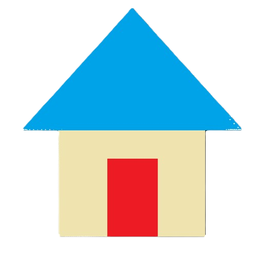

Lorsque le code JavaScript se trouve dans un fichier séparé (extension .js) La structure générale d'un programme écris en JavaScript est relativement simple.
/* zone d'en-tête */
/* déclaration des variables globales */
Declaration1;
Declaration2;
/* définition des fonctions (mot clef function) */
/* CORPS DU PROGRAMME */
Instruction1;
Instruction2;
/* FIN */
Même s'il est possible de déclarer nos variables à n'importe quels moments, il est conseillé de le faire en début de script pour une meilleure lisibilité du code.
Lorsque le JavaScript est écris dans une page Web la structure est différente. Dans un premier temps nous allons travailler uniquement sur la partie JavaScript. Cela donne la structure suivante :
<html>
<head>
<title>TODO supplu a title</title>
<meta charset="UTF-8">
<meta name="viewport" content="width=device-width, initial scale=1.0">
<script>
//ici les variables globales à la page et les fonctions
</script>
</head>
<body>
<body>
<script>
//ici les instructions
</script>
</body>
</html>
Le langage HTML utilise des balises. Nous reviendrons dessus prochainement. La balise permettant d'ajouter du JavaScript est <script> … </script>
Cette balise s'ajoute à 2 endroits particulièrement : entre les balises <head></head> pour les variables globales et pour les fonctions et entre <body></body> pour les instructions.
Les commentaires permettent une relecture de programme pour le programmeur lui-même mais aussi pour ceux qui vont relire le programme (travail en équipe). Un commentaire d'entête est nécessaire pour indiquer le nom du programmeur, la date, le nom du fichier, descriptif du programme. Les commentaires sont du texte simple et ne sont donc pas traités comme étant du code.
Ils ne seront donc pas interprétés.
2 types de commentaires sont possibles :
/*
* File: HelloWorld.js
* Author: sgibert
*
* Created on 14 septembre 2018, 20:19
*
* Description du programme : explique ici ce que fait ton programme
*/
Il n'est pas utile d'associer une ligne de code avec un commentaire d'autant plus si ce dernier ne fait que dire ce que fait le code.
Exemple :
// je déclare une variable x=3 : ce commentaire n'a aucun intérêt
// il vaut mieux expliquer à quoi sert la variable x dans notre code.
let x=3;
Une instruction ou une déclaration se termine toujours par un point-virgule (;) C'est le cas de nombreux langages de programmation. Mais attention le langage JavaScript n'est pas aussi strict au niveau de sa syntaxe et certaines instructions autorisent l'absence de ; de fin.
Pour faire simple, cela ne coute rien d'ajouter systématiquement ce marqueur de fin d'instruction et sera donc la règle pour nous.
Rappel du cours d'algorithmique :
En résumé : variable = NOM + TYPE + VALEUR
JavaScript est dit "faiblement typé" contrairement à d'autres langage dit "fortement typé" comme par exemple le langage C. Avec ses langages il est nécessaire de préciser le type au moment de la déclaration d'une variable.
Exemple de déclaration de variable en C :
int a=3 //a est un entier et restera un entier pendant tous le programme
float b=3.5 //b est un réel et restera un réel pendant tous le programme
float c='a' //c est un caractère et restera un caractère pendant tous le programme
Avec JavaScript une variable est déclaré avec la commande var ou let, mais sans indiquer son type. Le type sera fixé à l'utilisation. La notion de type est bien existante mais jamais indiqué de façon explicite dans le code.
Le JavaScript a 8 types : Number, String, Boolean, Null et Undefined, BigInt, Object, et Symbole (nouveau) .
Pour plus de précision sur le sujet voire le lien suivant :
https://developer.mozilla.org/fr/docs/Web/JavaScript/Structures_de_donn%C3%A9es
Cela donne en Javascript :
let a = 3 // a est un Number
a='coucou'; // a est maintenant un String
Dans ce programme la variable a est déclaré comme étant un "Number". Mais au cours du programme elle devient un "String". Bien que cela soit possible on essaiera au maximum ce genre de mélange.
Sur un PC la mémoire vive est une mémoire de travail. Elle stock de façon temporaire des données et des programmes. Lorsque le PC est éteint le contenu de cette mémoire est supprimé. On parle alors de mémoire volatile, contrairement au disque dur d'un ordinateur qui stocke lui aussi des données mais de façon permanente. Cette mémoire est très rapide, et communique directement avec le processeur.
En JavaScript la mémoire est allouée lors de la création des objets puis libérée « automatiquement » lorsque ceux-ci ne sont plus utilisés. Cette libération automatique est appelée garbage collection en anglais ou ramasse-miettes.
Bien qu'il soit possible de donner des noms de variables avec des caractères accentués en JavaScript on se limitera au caractères suivants :
On ne peut pas utiliser
On utilise l'alternance de minuscule, majuscule, ou _ (underscore) pour améliorer la lecture du nom.
Rappel : pour la relecture du programme, choisir un nom qui caractérise au mieux la variable.
Exemples:
nbrDeCaisses, poste_1, poste_123, etc…
Le langage JavaScript est sensible à la casse. Ainsi une variable "Poste_1" n'est pas la même chose que "poste_1"
Pour pouvoir être utilisable une variable doit d'abord être déclarés. En théorie seulement puisqu'encore une fois le JavaScript est un langage très souple, pour ne pas dire permissif. Il autorise de nombreuses choses que d'autres langages refuseraient.
On parle de déclaration de variable. 2 mots clefs sont utilisés pour cela : var et let
Une variable peut être déclaré n'importe quel moment.
Exemple :
Que choisir entre var et let ? Pour faire simple nous utiliserons let. C'est ce qui est recommandé. Pour aller plus loin :
https://developer.mozilla.org/fr/docs/Web/JavaScript/Reference/Instructions/let
Rappel : le nom d'une variable est unique dans votre programme.
La syntaxe de base est :
Exemple :
<script>
let a // a est ici undefined;
let b=4; // b est un number vaut 4
let c,d=3,e //3 variables;
let f=3; //f est une constante
var g="Bonjour" //f est une String;
</script>
Tableau récapitulatif :
| Type JavaScript | Type Algo | Taille | Plage de valeurs |
| Number | Entier ou Réel | 8 octets | -(2^53 -1) et 2^53 -1 pour les Entiers 5e-324 et 1.7976931348623157e+308 pour les Réels |
| BigInt | Entier | ? | Permet d'aller au-delà de la limitation de Number. |
| String | Chaine et Cacractère | 2 octets à ? | Permet de représenter une chaine de caractère "Bonjour" ou un simple caractère 'c' |
| Boolean | Booléen | 1 | 2 valeurs possibles : true ou false. |
| Null | ? | ? | Une valeur possible : null |
undefined | ? | ? | Une valeur possible : undefined |
Exemples :
let a=+10; //Les 2 déclarations sont équivalentes
let a=10;
Si Number est un entier sa plage de valeur est comprise entre -(2^53 -1) et 2^53 -1, soit entre -9007199254740991 et +9007199254740991. Passé cette plage JavaScript ne garantit plus la cohérence des calculs, et il y aura des incohérences. Pour comprendre ce phénomène il est important de comprendre la différence entre la représentation des nombres en mathématique et en informatique.
Principe de la représentation des entiers en mathématique :
En mathématique existe la notion abstraite de +∞ et -∞. Ainsi tous les nombres peuvent se représenter selon le graphique :
Principe de la représentation des entiers en informatique :
Les machines informatiques ont des limites et ne permettent pas de représenter les nombres entiers de +∞ à -∞. Il y a une limite. Par exemple sur un 1 octet le nombre de valeurs possible est de 2^8 soit de [-127 .. 0 .. 128] soit 256 valeurs. La valeur -128 ne peut pas être représenté, et de même pour la valeur 129.
La représentation est donc celle d'un cercle.
Ainsi le calcul suivant donne un résultat faux :
let a=2**53-1; //ici a vaut 9007199254740991
a=a+20; // en théorie a vaut maintenant 9 007 199 254 741 011
// en réalité cela donne 9007199254741012
Avec une erreur de 1 répété beaucoup de fois on peut arriver à de grosses erreurs.
Si Number est un réel sa plage de valeurs est comprise entre 5e-324 et 1.7976931348623157e+308. Passé cette plage JavaScript propose 2 valeurs pour représenter +∞ à -∞.
Exemples :
let a=(2**2000); //Ici (a) vaut Infinity
let b=-(2**2000); //Et (b) -Infinity
let a=2n**53n-1n; //ici a vaut 9007199254740991
a=a+20n; // a vaut 9 007 199 254 741 011
let a="coucou";
let b='coucou';
Chaque caractère formant la chaine (a) ou (b) est constitué de caractère codé sur 16 bits soit 2 octets. JavaScript utilise la table Unicode. Donc un caractère a une valeur numérique.
Voici une liste de certains caractères spéciaux :
| Code | Sortie |
| \' | Apostrophe |
| \" | Guillemets |
| \& | & |
| \\ | Barre oblique inverse |
| \n | Nouvelle ligne |
| \r | Retour de chariot |
| \t | Tabulation |
| \b | Espace |
| \f | Saut de page |
Il y a 3 grandes catégories d'opérateurs.
Il existe une certaine priorité des opérateurs, comme en mathématique. Pour s'éviter tous problèmes avec ces priorités il suffit de mettre des parenthèses.
| Opérateur | Signification |
| + | Addition |
| - | Soustraction |
| * | Multiplication |
| / | Division |
| + | Modulo (reste de la division entière) |
| ** | puissance |
Le langage JavaScript a la particularité de toujours chercher à retourner quelque chose même quand le calcul n'a pas de logique. Il faut donc faire très attention !!
Quelques exemples :
let a=3,b=5,c=a+b; // c vaut 8 normal
let a=3,b=50.5,c=a+b; // c vaut 53.5
let a=true,b=50.5,c=a+b; // c vaut ?
let a=true,b=true,c=a+b; // c vaut ?
let a=5,b="test",c=a+b; // c vaut ?
Quand une opération n'est vraiment pas possible JavaScript retourne en générale une valeur NaN qui signifie Not A Number.
Dans l'exemple qui suit on cherche à diviser un Number par un String ce qui n'a pas de sens. Le résultat est ici NaN
let a=5,b="test",c=a/b;
Cas particulier de la division d'entier :
Dans de nombreux cas nous avons besoin de récupérer un résultat de type Entier. Le code suivant ne permet d'obtenir le quotient 2 pour cette opération, mais 2.5. Plusieurs solutions existent pour obtenir le résultat voulu notamment la fonction pareInt.
let a=5,b=2,c=a/b; // sans parseInt c vaut 2.5
document.write(parseInt(c)); // avec parseInt c vaut 2
Pour obtenir le reste de la division on utilisera l'opérateur %. Avec JavaScript % marche aussi sur les nombres reels. Encore une souplesse qui n'existe pas d'autre langage. A éviter !!
let a=5,b=2,c=a%b; // c vaut 1
Comme vous l'avez appris en math il ne faut jamais diviser par 0. Dans de nombreux langage ce genre d'opérations fait planter le programme par le mécanisme d'exception comme en Java par exemple. Et bien ce n'est pas le cas en JavaScript. Il existe même en JavaScript la valeur -0. Comme nous l'avons déjà dit, JavaScript cherchera toujours à retourner un résultat.
let a=5.5,b=0,c=a/b; // une division par zéro : ici c vaut infinity
let a=5.5,b=-0,c=a/b; // une division par - zéro : ici c vaut -infinity
Les principes énoncés ci-dessus sont les même pour les autres opérateurs.
Attention pour l'opérateur ** (puissance). JavaScript possède également un opérateur binaire ^ (XOR logique). ** et ^ sont deux opérateurs bien différents. Par exemple 2 ** 3 === 8 et 2 ^ 3 === 1.
Ce type d'opérateur dans les tests des conditions (if, else if) ou des boucles (for, while, do while). Le résultat d'une opération logique est une valeur booléenne (true ou false)
| Opérateur | Signification |
| ! | Non logique |
| && | Et logique |
| || | Ou logique |
| == (double égal) et === | Égal à, et Egalité strict |
| != et !== | Différent de |
| < | Inférieur à |
| > | Supérieur à |
| <= | Inférieur ou égal à |
| >= | Supérieur ou égal à |
Exemples :
let i=4,j=3 ;
let v ;
v=(i<=j) ; // v vaut : false
v=(i==4 && i > 2); // v vaut ?
| Opérateur | Signification |
| = | Affectation |
| += | Ajout de l'opérande de droite |
| -= | Suppression de l'opérande de droite |
| *= | Multiplication de l'opérande de droite |
| /= | Division de l'opérande de droite |
| %= | Modulo de l'opérande de droite |
| **= | Puissance de l'opérande de droite |
| ?: | Affectation conditionnelle |
| ++variable | Pré-incrémentation (avant) |
| variable++ | Post-incrémentation (après) |
| --variable | Pré-décrémentation |
| variable-- | Post-décrémentation |
Quelques exemples simples :
let i=3;
i++ ; // i=i+1 ;
i-- ; // i=i-1 ;
i+=1 ; //i=i+1 ;
i*=5 ; //i=i*5 ;
Attention, certains opérateurs sont dits à effet de bord, et s'ils sont mal utilisé (ou mal maitrisé) peuvent donner des résultats inattendus. Exemple
let a=5,b=1,c=0;
c=++b + a++; //c vaut ?
let a=5,b=1,c=0;
c=b++ + a++; //c vaut ?
Conseils : Programmez au début en utilisant une façon simple d"incrémenter et d"affecter.
L'affectation conditionnelle :
Syntaxe : <opérande> = <condition> ?<expression1> :<expression2> ;
Si condition vaut true alors on affecte à opérande expression1, si false expresson2.
Exemple :
let i=3,j=4,k ;
k= i>j ?10 :-10 ;
Les fonctions d'entrée-sortie permettent de "dialoguer" avec un périphérique d'entrée (bien souvent un clavier) et un périphérique de sortie (bien souvent un écran).
Dans un environnement Web, pour commencer simplement nous utiliserons 3 fonctions :
Pour revenir à la table des matières
Si vous avez des questions, n'hésitez pas à envoyer un mail par ici !
Pour télécharger le cours et y accéder hors-ligne, cliquer ici !